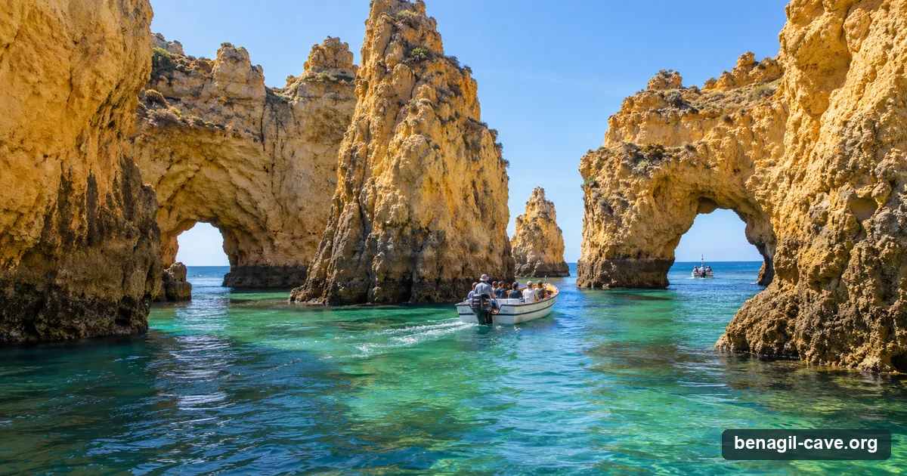

From Lagos, Benagil is the longest western crossing — about 45 to 60 minutes by speedboat — but it’s also the most scenic, running past the golden sea-stacks of Ponta da Piedade on the way. Best if you’re staying in the western Algarve.
Bookings via GetYourGuide (we may earn a commission) · Updated 11 November 2026

Lagos trips pass Ponta da Piedade first; the cave is the far turnaround, 45 to 60 minutes out.
~45–60 minBy sea to the cave
MediumTour supply
€40From, per adult
7Bookable online
From Lagos
Why leave from Lagos
Lagos is the farthest west of the main departure towns, so the run to Benagil is longer — but you trade transit time for scenery, passing the spectacular cliffs and sea-stacks of Ponta da Piedade on the way out. Many Lagos trips combine the cave with dolphin watching, making a full morning or afternoon of it.
It’s the obvious choice if you’re based in Lagos, Praia da Luz or the western Algarve, where driving east to Carvoeiro would cost you the time you’d save on the water.
Logistics
Getting there & parking
The essentials
Departure point: Marina de Lagos / Doca de Lagos — operator shops on the marina front.
Time to the cave: ~45–60 min each way by speedboat.
Driving here: From Faro airport about 86 km, about 65 minutes by road. From Portimão about 25 minutes, from Albufeira about 45 minutes.
Parking: Public parking around Marina de Lagos and the old town; generally easier than Benagil but busy in peak summer.
One-way sea times, approximate. The closest launches spend the most of your trip at the cave.
Two sights in one: Lagos trips typically take in Ponta da Piedade and often dolphins as well as Benagil: good value for a longer outing, less so if you only want the cave (leave from Carvoeiro for that). The Benagil and dolphin combos from Lagos, Albufeira and Portimão are compared on the caves and dolphins page.
Tours
Benagil tours from Lagos
Two long-established, fully-licensed Lagos operators run the Benagil trips — a heritage sailing company with a fast motorboat for the cave, and a speedboat specialist. Online departures with live dates first.
Bookable online — from Lagos and the nearest launches
Our top pick from Lagos has its own calendar just below; these are the alternatives, ordered by rating and price with the higher-end trips first; the most-booked boat and the cheapest seat are always in the list, private boats last. Only 3 of these leave from Lagos itself; each card says where it departs. Every card opens the live GetYourGuide page.
Prices are GetYourGuide "from" prices in US dollars, per person unless the card says "priced per boat", ratings and review counts as listed on 11 November 2026; they move with season and availability — the live widget and the booking page are the reference. Every trip runs sea permitting: the skipper or guide decides on the day, and each listing sets out what happens if the sea cancels it. Booking through these links may earn us a commission at no extra cost to you; it never changes the order or the verdicts.
Book direct — the Lagos operators on their own sites
A Lagos institution since 1980. The fast “Hurricane” motorboat runs the Benagil-plus-dolphins trip (2h30, ~€40–€55, marine biologist aboard); its beautiful 1920s–50s sailing boats do the coast. Huge review base.
Large “Tornado” speedboat€42.90RNAAT 87/2010 ✓4.6 ★ · ~962 reviews
Running since 1999 aboard a large ~28-seat rigid inflatable. The dedicated Benagil Sea Cave tour is 2 hours at €42.90 (homepage promo from €27.90); dolphin and Ponta da Piedade trips too. Fast and punchy.
Direct prices are starting adult fares in euros (June 2026, licences re-checked September 2026) and change seasonally; confirm at booking. ✓ = RNAAT tourism licence verified on the operator's own site. Full profiles on the operators page.
See every operator, side by side
Compare all 15 Benagil operators by price, craft, cave time, licence and rating.
Lagos: Combo Dolphin and Benagil Tour with Marine Biologist — 4.7★ from 4,319 reviews, from $36 on 11 November 2026 (on promotion; the listing's regular price was $67) on GetYourGuide, free cancellation on most dates. Pick a date below; it confirms on GetYourGuide. Sea permitting: the skipper or guide decides on the day, and the Capitania do Porto de Portimão can close the caves by a notice to mariners when the sea does not allow visits. Check the sea conditions the evening before, and favour dates with free cancellation.
Before You Book
The access rules apply here too
Wherever you leave from, the same binding rules govern the cave itself. Under Edital 019/2024 of the Capitania do Porto de Portimão, in force since August 2024 and amended by Edital 009/2025 of 2 July 2025: no landing on the beach inside, no swimming or floating in, no paddle-craft outing or rental without a guide. Motorised boats enter by the western entrance for two minutes, up to five at once. Kayaks and SUPs enter by the eastern entrance in groups of six with one first-aid-certified guide, up to fourteen craft inside at once, for up to eight minutes. Life jackets are compulsory for the whole visit. It is the same cave under the same law; the town only changes how you get there.
The full text, in Portuguese and English, with dates and sources, is on the rules page. If any Lagos operator promises a stop on the beach inside Benagil, that is the pre-2024 experience: check before paying. Sea permitting: the skipper or guide decides on the day, and the Capitania do Porto de Portimão can close the caves by a notice to mariners when the sea does not allow visits. Check the sea conditions the evening before, and favour dates with free cancellation.
FAQ
Questions about Benagil from Lagos
Yes. Seatrips Lagos runs a 2.5-hour combo from Marina de Lagos on its speedboat Hurricane, with marine biologists, and AlgarExperience runs a catamaran version. No listing guarantees dolphins; the caves and dolphins page compares them with the Albufeira and Portimão boats.
About 45 to 60 minutes each way by speedboat — the longest western crossing, but it passes Ponta da Piedade. Full trips usually run around 2 to 2.5 hours.
Yes if you’re staying in the western Algarve, or if you want Ponta da Piedade and dolphins as well as the cave. If you only want Benagil with the most cave time, Carvoeiro is closer.
Around €40 for Bom Dia’s Benagil-and-dolphins trip and €42.90 for Seafaris’ dedicated Benagil Sea Cave tour direct; the online Lagos departures show live prices in US dollars with free cancellation.
Of the 7 Lagos trips on this page, 4 say in their listing that the boat goes into the cave (Seatrips Lagos writes that it only enters when conditions are suitable and safe); the other 3 say nothing about it, and their cards say so. No tour lands on the interior beach or swims in, and a boat that does go in stays for the two minutes the rules allow.
More Benagil & coast trips, live
GetYourGuide's full Benagil list with real-time dates — kayak and SUP tours, catamarans with dolphins, sunset runs and private boats from every town on the coast.